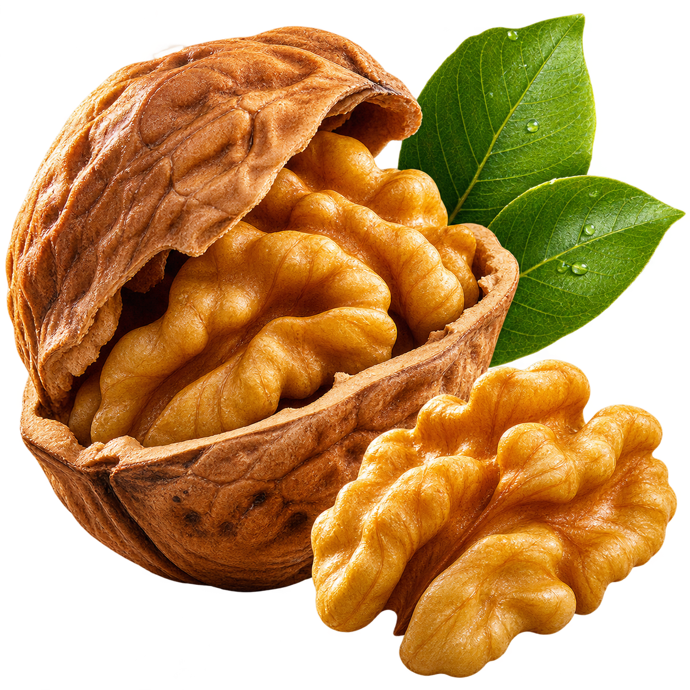

Йогурт, мёд, орех.
Нежная основа, немного сладости и тот самый хруст.
Выложите в миску натуральный йогурт, добавьте горсть рубленых орехов и ложку мёда. Завершите ломтиками груши.
Крепкая скорлупа. Тонкий аромат.
И целый мир вкуса, который стоит открыть. Знакомьтесь — грецкий орех.

Сначала — негромкий хруст. Потом — мягкий, маслянистый вкус с лёгкой терпкостью. Грецкому ореху не нужны сложные сочетания, чтобы стать главным впечатлением.
В утренней каше, в тёплом хлебе, рядом со спелой грушей. Или просто так — в момент, когда хочется сделать паузу.
Три маленьких ритуала.
Для большого удовольствия.
Нежная основа, немного сладости и тот самый хруст.
Выложите в миску натуральный йогурт, добавьте горсть рубленых орехов и ложку мёда. Завершите ломтиками груши.
Сочная груша, листья салата и тёплый ореховый акцент.
Соедините листья салата, тонко нарезанную грушу и орехи. Заправьте оливковым маслом с лимонным соком. Добавьте любимый мягкий сыр по желанию.
Тёплый тост и простое сочетание, к которому хочется вернуться.
Подрумяньте ломтик хлеба, намажьте мягким сыром и посыпьте рублеными орехами. Добавьте немного мёда или свежий тимьян.
Иногда всё, что нужно, уже придумала природа.
Найти вдохновение ↗